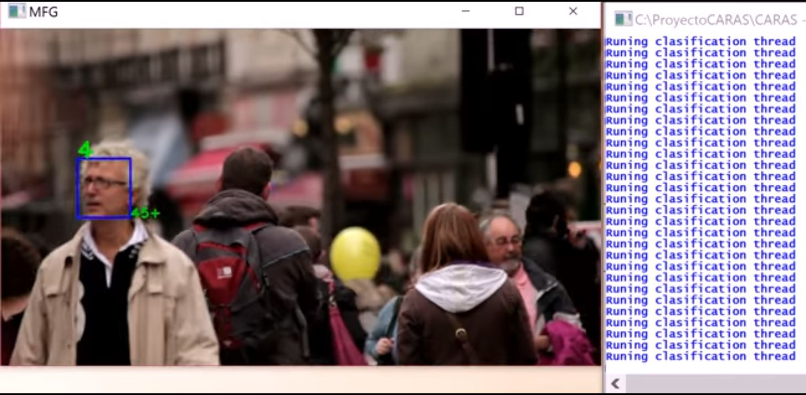

<div id="ajax-page" class="ajax-page-content">
    <div class="ajax-page-wrapper">
        <div class="ajax-page-nav">
            <div class="nav-item ajax-page-close-button">
                <a id="ajax-page-close-button" href="#"><i class="zmdi zmdi-close"></i></a>
            </div>
        </div>

        <div class="ajax-page-title">
            <h1>Degree Project on Artificial Vision</h1>
        </div>

        <div class="row">
            <div class="col-sm-7 col-md-7 portfolio-block">
                <div class="portfolio-page-image">
                    
                </div>
            </div>

            <div class="col-sm-5 col-md-5 portfolio-block">
                <!-- Project Description -->
                <div class="block-title">
                    <h3>Description</h3>
                </div>
                <ul class="project-general-info">
                    <li>
                        <p><i class="fa fa-globe"></i> <a href="https://github.com/mtuduri/caras"
                                target="_blank">caras</a>
                        </p>
                    </li>
                    <li>
                        <p><i class="fa fa-calendar"></i> Oct 2017 - Aug 2020 </p>
                    </li>
                </ul>

                <p class="text-justify">This project raises the problem of recognition, monitoring and facial
                    classification in real time according to gender and age ranges.

                    The typical problems and the most used techniques were studied, analyzing the state of art in image
                    processing, automatic learning and artificial vision, culminating in the preparation of a possible
                    prototype to solve this problem.</p>
                <!-- /Project Description -->

                <!-- Technology -->
                <div class="tags-block">
                    <div class="block-title">
                        <h3>Tech Stack</h3>
                    </div>
                    <ul class="tags">
                        <li><a>C++</a></li>
                        <li><a>CUDA</a></li>
                        <li><a>OpenCv</a></li>
                        <li><a>Computer Vision</a></li>
                        <li><a>Face Detection</a></li>
                        <li><a>Face Tracking</a></li>
                        <li><a>Artificial Intelligence</a></li>
                    </ul>
                </div>
                <!-- /Technology -->

            </div>
        </div>
    </div>
</div>